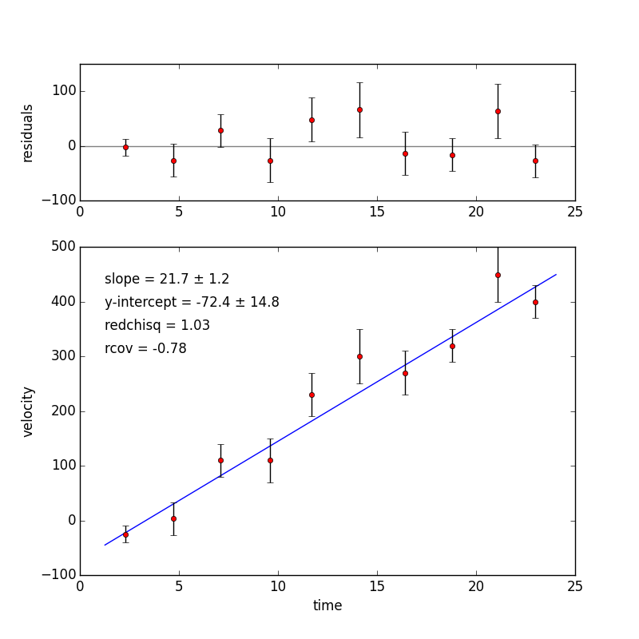

Least squares fit to straight line
Fit a straight line f(x) = a + bx to (x, y) data points. Returns coefficients a and b that minimize the squared error.
| Parameters : | x : array_like
y : array_like
sigmay : NoneType or float or array_like, optional
relsigma : bool, optional
return_all : bool, optional
|
|---|---|
| Returns : | fit : array([a,b]) ndarray of floats
cvm : array, shape (2,2)
lfinfo : bunch dictionary
|
| Raises : | TypeError : if x and y have different lengths TypeError : If x and y have 2 or fewer elements TypeError : If sigmay length is not 1 or the same as y |
See also
Notes
By default, linfit returns optimal fitting parameters a = fit[0] and b = fit[1] without weighting of the data. In that case, linfit minimizes the squared error
If sigmay is set equal to the uncertainties in the y data points, then linfit minimizes the chi-squared sum
where \(\sigma_i\) is given by sigmay, the one-standard-deviation uncertainty (or “error”) of \(y_i\). sigmay can be either a single number that gives the uncertainty for all elements of y, or it can be an array of the same length as y that gives the “error” for each element of y. rchisq is \(\chi^2/(n-2)\) where \(n\) is the number of data points (the length of x or y).
If relsigma is False, then the uncertainties sigmay in y are assumed to be the absolute one-standard-deviation uncertainties in y. In this case, the reduced chi-squared value \(\chi^2/(n-2)\) provides a measure of the goodness of the fit. If it is near 1, then the linear fitting model is considered to be good and the values of the covariance matrix are appropriately scaled. In particular, the square root of the diagonal elements of the covariance matrix give the estimated uncertainty in the fitting parameters a and b. See References [R1] and [R2] below for more information.
If relsigma is True, then the uncertainties sigmay in y are considered to be only relative uncertainties. They are used to weight the data for the fit, but in this case, the covariance matrix is rescaled using the residuals between the fit and the data. In this case, the reduced chi-squared value \(\chi^2/(n-2)\) does not provide a measure of the goodness of the fit. Nevertheless, the diagonal elements of the rescaled covariance matrix (returned by linfit) give the estimated uncertainty in the fitting parameters a and b.
The covariance matrix is a 2x2 symmetric matrix where the diagonal elements are the variance of the fitting parameters. Their square roots provide estimates of the uncertainties in the fitting parameters. The off-diagonal elements are equal and give the cross correlation between the two fitting parameters a and b.
Speed: linfit runs faster, by a factor of 2 to 3, if calculation of the residuals is suppressed by setting relsigma=False and return_all=False.
Fitting a straight line to a single set of (x, y) data using linfit is typically 2 to 10 times faster than using either polyfit or linalg.lstsq, especially when weighting is used and for very large data sets.
References
| [R1] | (1, 2) An Introduction to Error Analysis, 2nd Ed. by John R. Taylor (University Science Books, 1997). |
| [R2] | (1, 2) Numerical Recipes, The Art of Scientific Computing, 3rd Edition by W.H. Press, S. A. Teukolsky, W. T. Vetterling, & B. P. Flannery (Cambridge University Press, 2007). |
Examples
Fit a line, y = ax + b, through some noisy (x, y) data-points without any weighting (sigmay = None) to obtain the fitting parameters: the slope a and the y-intercept b:
>>> x = np.array([0, 1, 2, 3])
>>> y = np.array([-1, 0.2, 0.9, 2.1])
>>> fit, cvm = linfit(x, y)
>>> print("a = {0:0.2f}, b = {1:0.2f}".format(fit[0], fit[1]))
a = 1.00, b = -0.95
When uncertainties sigmay are left unspecified, meaningful estimates of the uncertainties da and db in the fitting parameters a and b are given by the square roots of the diagonals of the covariance matrix cvm, provided relsigma = True (the default state).
>>> dfit = np.sqrt(np.diag(cvm))
>>> print("da = {0:0.2f}, db = {1:0.2f}".format(dfit[0], dfit[1]))
da = 0.07, db = 0.13
A better practice is to supply estimates of the uncertainties in the input argument sigmay. sigmay can be a single float, if the uncertainties are the same for all data points, or it can be an array, if the uncertainties for different data points are different. Here sigmay is entered as an array.
>>> dy = np.array([0.18, 0.13, 0.15, 0.17])
>>> fit, cvm = linfit(x, y, sigmay=dy, relsigma=False)
>>> print("a = {0:0.2f}, b = {1:0.2f}".format(fit[0], fit[1]))
a = 0.98, b = -0.91
>>> dfit = np.sqrt(np.diag(cvm))
>>> print("da = {0:0.2f}, db = {1:0.2f}".format(dfit[0], dfit[1]))
da = 0.08, db = 0.14
Addition information about the fit is calculated and returned as a bunch dictionary if the optional argument return_all=True.
>>> fit, cvm, info = linfit(x, y, sigmay=dy, relsigma=False, return_all=True)
>>> print("reduced chi-squared = {0:0.2f}".format(info.rchisq))
reduced chi-squared = 1.21
>>> print(info.resids)
[-0.08856653 0.12781099 -0.1558115 0.06056602]
The value of reduced chi-squared (rchisq) is 1.21 indicating that a linear model is valid for these data. The residuals \(y_i - (a+bx_i)\) are given by the output resids.
If absolute estimates of the uncertainties are not available, but relative estimates of the uncertainties are known, a fit can be obtained with reasonable estimates of the uncertainties in the fitting parameters by setting relsigma = True.
>>> dy = np.array([1.0, 0.75, 0.75, 1.25])
>>> fit, cvm, info = linfit(x, y, sigmay=dy, relsigma=True, return_all=True)
>>> print("a = {0:0.2f}, b = {1:0.2f}".format(fit[0], fit[1]))
a = 0.97, b = -0.91
>>> print("da = {0:0.2f}, db = {1:0.2f}".format(info.fiterr[0], info.fiterr[1]))
da = 0.09, db = 0.16
>>> da, db = np.sqrt(np.diag(cvm))
>>> print("da = {0:0.2f}, db = {1:0.2f}".format(da, db))
da = 0.09, db = 0.16
>>> print("reduced chi-squared = {0:0.2f}".format(info.rchisq))
reduced chi-squared = 0.04
In this case, the value rchisq is meaningless, because only the relative, rather than the absolute uncertainties are known. Nevertheless, by setting relsigma = True, reasonable estimates for the uncertainties in the fitting parameters are obtained. Note that info.fiterr provides the same information, the estimated uncertainties in the fitting parameters, obtained by taking the square roots of the diagonal elements of the covariance matrix.
Illustration:
{kind=link}